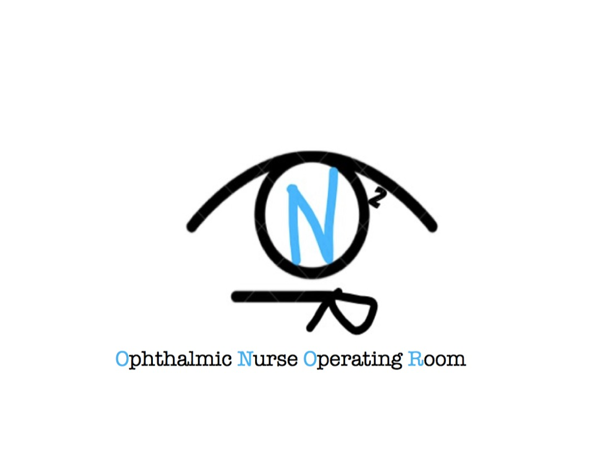

Eu
✨
Premium
🤖
AI
🧭
Risorse
📦
Lista
🎬
Video
🖨️
Print
Materiali, strumenti e video in un’unica regia.
Materiali:
0
Strumenti:
0
Video:
—
Copia checklist
Reset spunte
Stampa
Assistente AI locale
Cerca materiali senza aprire le liste
Cerca
Pulisci
Duovisc cataratta
Biom vitrectomia
Mitomicina glaucoma
Olio silicone distacco
Preserflo
Indicizzazione intelligente in corso…
Bootstrap
Sidebars examples
Icon-only

Check List Strumentario Oculistica
Mosca
Mosca1
Mosca2
Cataratta1
Cataratta2
CatarattaGlaucoma
Fasciani
Fasciani1
Fasciani2
Rizzo
Cataratta
Glaucoma
Episclerale
Vitrectomia
Cheratoplastica
Home
Link
Servitori
Carlevale
Biopsia Palpebra
Dalk
Dmek
Dsaek
Enucleazione
Pk
Placca Rutenio
Ptosi
Puncutumplug
Rebubbling
Strabismo
Xen
Descrizione Interventi
Surgery
Cataratta
Vitrectomia
Cerchiaggio
Cheratoplastica
Descrizione Dispositivi
Iol
Hoya
Baush e Lomb
Medico
Blasi
Baldascino
Capobianco
Cuffaro
DeVico
DAmico
Fasciani
Giannuzzi
GiudiceAndrea
Lepore
Minnella
Molle
Mosca
Pagliara
Ricci
Rizzo
Salerni
Sammarco
Savino
Scupola
Intervento
AnelliTantalio
Baerveld
Biopsia Palpebra
Biopsia Congiuntivale
Brachiterapia
carlevale
Cataratta
CatarattaEcce
Calazio
Cioclocrio
Cerchiaggio
CerchiaggioTradizionale
Dacrio
Entropion
Enucleazione
Evisceratio
Express
FacoTrab
Glaucoma
Ham
LenteTorica
Trapianto_Pk
TrapiantoPkVitrectomia
Trapianto_DMEK
Trapianto_DSAEK
Trapianto_DALK
Ptosi
Pterigio
Placca rutenio
Preserflo
PunctumPlug
Pupilloplastica
Rebubbling
RevisioneFeritaLasik
Samsara
ScoppioDelBulbo
Strabismo
Tarsioraffia
Vitrectomia
VitrectomiaAnteriore
VitrectomiaDistacco
VitrectomiaPucher
VitrectomiaForo
Xen
Materiali Necessari
Articolo
Sequenza Strumenti
Sequenza
Video Intervento
Legal for Digital © Copyright 2023 by Ophthalmic Nurse Operating Room